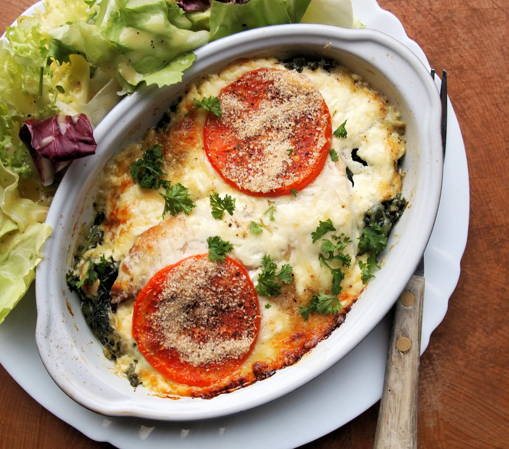

приготовление:
-
Заранее слегка разморозить упаковку филе пикши весом 360 г. Если блюдо планируется на ужин, можно с утра переложить рыбу из морозилки в холодильник. Полностью размораживать её необязательно, но желательно оставить в холодильнике хотя бы на несколько часов.
-
Разогреть духовку до 200 °C. Переложить пикшу в форму для запекания и посыпать приправой для рыбы. Нарезать 1 средний томат, разложить его поверх рыбы, слегка посолить и поперчить.
-
Поставить форму в разогретую духовку и запекать 12 минут.
-
Пока рыба запекается, натереть 50 г чеддера или другого любимого сыра. Добавить 30 г лёгкого майонеза и перемешать.
-
Достать форму из духовки, равномерно распределить сырную смесь поверх томатов и вернуть в духовку ещё на 5 минут.
-
Если кусочки рыбы толстые или остались сильно замороженными, запекать ещё несколько минут. Готовая пикша должна легко разделяться вилкой на хлопья, а температура в центре самого толстого кусочка должна достигнуть примерно 63 °C.